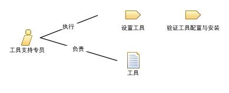

扮演此角色的个人需要有一系列广泛的技能。包括理解项目所使用的低层过程，以及在项目启动时进行培训。在为项目比较和选择工具时，通用的系统分析技能是有益的。关于开发平台的知识是必需的，尤其是关于网络的问题。承担该角色的人员还需要良好的沟通过技能以及一个服务的心态，因为他或她需要在支持中接触项目成员，如在安装和其他工具故障时。
此角色可以通过如下方式进行分配：
This program and the accompanying materials are made available under the Eclipse Public License V1.0, which accompanies this distribution.
EPF Copyright.